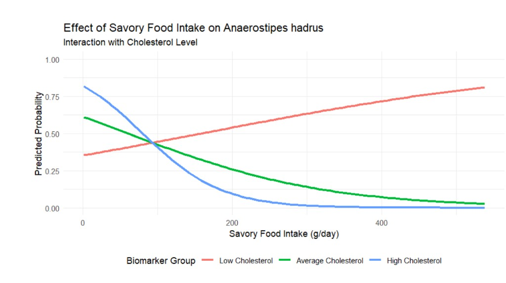
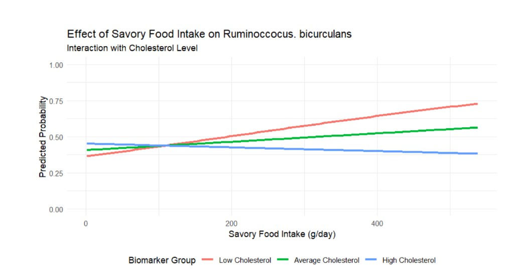
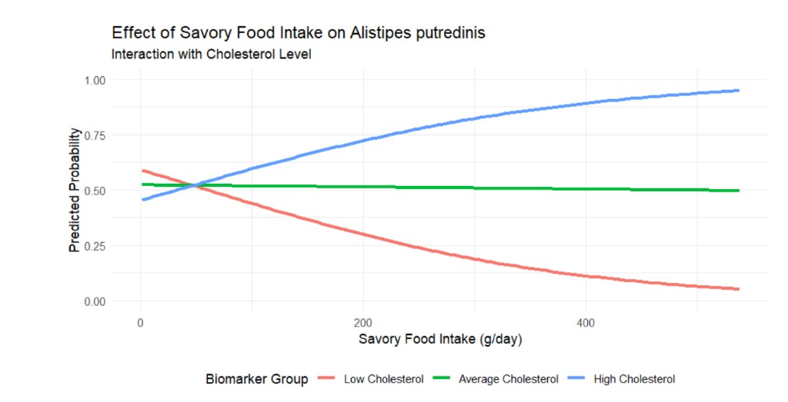

Results
1 Results
The tested groups were identified through PCA. It weighted the heaviest categories as the three bacterial species chosen, Anaerostipes hadrus, Ruminococcus bicurculans, and Alistipes putredinis. Along with these, cholesterol was among the highest biomarker contributors, and savory foods, vegetables, and fruits were among the highest intake contributors. Using these observations, we plotted interactions between bacteria, biomarkers, and intake amounts using logistic regression models.
1.1 Regression plots for focal taxa

Demonstrates inverse relationship in low cholesterol individuals P = 0.0262

Demonstrates inverse relationship in low and average cholesterol individuals P = 0.468

Demonstrates inverse relationship between high cholesterol individuals P = 0.432
Overall, logistic regression shows a significant relationship between Anaerostipes hadrus, savory food intake, and Serum cholesterol. Cholesterol and savory food intake showed an inverse relationship with A. hadrus. When cholesterol and savory food intake are both high, the presence of A. hadrus is significantly reduced. This is shown by an interaction coefficient of -4.534764, with a p-value of 0.0266. At a 95% confidence interval, this relationship is statistically significant.
However, as cholesterol decreases and savory food intake increases, the presence of A. hadrus also increases. This is likely due to the fact that A. hadrus helps metabolize cholesterol while producing butyrate, a short-chain fatty acid required in gastrointestinal function. Since it uses cholesterol-associated substrates, it follows that there may be increased presence when cholesterol is present, but when cholesterol is excessive, A. hadrus may no longer thrive.
Out of the three bacterial species identified from PCA, A. hadrus was the only one with a significant relationship with cholesterol and savory foods. This may reflect that Alistipes putredinis and Ruminococcus bicurculans are more specialized microbes, responsible for fiber processing and providing a supplemental relationship to A. hadrus. Because of this, other relationships were examined to identify additional factors not captured in the primary hypothesis.
The relationship between all three microbes and vegetable and fruit intake was tested, as well as the relationship between microbes, protein intake, and cholesterol. All microbes demonstrated extremely small interactions between vegetable and fruit intake, with interaction coefficients not above 0.000001, and large p-values (approximately 0.5 to 0.9).
The final interaction tested was between each bacterium, protein intake, and Serum cholesterol. There was no significant relationship for these variables with A. hadrus or R. bicurculans, but there was a borderline relationship observed for A. putredinis (interaction coefficient -0.002, p = 0.07).
Overall, additional tested interactions did not show robust significance. The results suggest there may be biologically relevant relationships, especially for A. hadrus and A. putredinis, but more research is needed to determine conclusive effects.
2 Discussion
2.1 Overview of key findings
The primary finding of this study is that host metabolic state significantly modifies the relationship between dietary intake and gut microbiome composition. Rather than acting independently, savory food intake and Serum cholesterol levels interact to shape the abundance of key gut microbial taxa. This supports a context-dependent model of diet-microbiome interactions, where metabolic biomarkers influence how dietary exposures translate into microbial outcomes.
The most notable effect was observed in Anaerostipes hadrus, a major butyrate-producing species essential for gut barrier integrity and anti-inflammatory activity. The logistic regression model showed a statistically significant interaction between savory food intake and cholesterol levels (p = 0.0266). While A. hadrus remained relatively stable in individuals with low cholesterol regardless of dietary intake, its predicted probability decreased substantially in high cholesterol individuals as savory food intake increased. This suggests that elevated cholesterol may alter the gut environment in a way that increases microbial sensitivity to dietary stressors.
This aligns with known biology: A. hadrus contributes to short-chain fatty acid production, including butyrate, supporting gut epithelial energy metabolism and intestinal barrier maintenance (Vourakis et al.). A. hadrus helps regulate cholesterol-associated gut metabolism, but when cholesterol is too high, the gut environment may become less stable for this taxon. This pattern suggests that A. hadrus abundance is not solely driven by dietary input, but is modulated by host metabolic context, particularly cholesterol availability.
As for the other two species, R. bicurculans and A. putredinis are more specialized microbiota and appear more bile-resistant, allowing them to persist in harsher conditions compared to A. hadrus. This suggests these taxa occupy ecological niches less sensitive to some dietary and metabolic variation, while still potentially contributing complementary fiber-to-butyrate functions (Parker et al.).
2.2 Microbial specialization and ecological shifts
A comparison across taxa highlights clear differences in ecological response. Ruminococcus bicurculans, a fiber-degrading bacterium, showed no significant interaction effect, suggesting relative stability across dietary and metabolic conditions in this dataset. In contrast, Alistipes putredinis displayed an opposite trend, with increased predicted abundance in high-cholesterol, high-savory conditions (Parker et al.).
These contrasting patterns suggest a shift in microbial ecology driven by host metabolic state. A possible explanation involves bile acid metabolism. Elevated cholesterol is associated with increased bile acid production, which can act as a selective antimicrobial agent. This environment may not favor sensitive fiber-fermenting bacteria such as A. hadrus while favoring bile-resistant species such as A. putredinis. The resulting shift reflects a transition from fiber-degrading microbial communities toward bile-tolerant taxa adapted to high-fat, metabolically stressful environments, consistent with diet-associated dysbiosis (Zeng et al., 2017).
2.3 Biological interpretation
These findings align with existing research on short-chain fatty acids and gut health. Butyrate-producing bacteria such as A. hadrus contribute to serving as an energy source for colon epithelial cells and maintaining gut barrier function. Their reduction may therefore have downstream effects on inflammation and metabolic regulation. The observed interaction suggests that cholesterol does not only act as a passive biomarker but may actively shape the gut environment, modifying how dietary inputs influence microbial survival and function (Ridlon et al., 2014).
2.4 New knowledge and implications
This study introduces an interaction-centered framework for understanding diet-microbiome relationships. Rather than treating diet as a universal predictor of microbial composition, the results demonstrate that host metabolic state functions as a key modifier. Specifically, individuals with elevated cholesterol may be more susceptible to diet-associated reductions in beneficial butyrate-producing bacteria. This has important implications for personalized nutrition. The same dietary pattern may produce different microbiome outcomes depending on an individual’s metabolic profile, suggesting that dietary recommendations may need to account for baseline biomarkers such as cholesterol.
3 Limitations
This study is cross-sectional, meaning that causal relationships cannot be established. While the models identify strong associations and interactions, they cannot determine whether elevated cholesterol directly causes microbial changes or whether microbial shifts contribute to altered cholesterol levels. Prior literature has shown that diet-microbiome associations can be influenced by unmeasured confounders such as host genetics, sequencing batch effects, and lifestyle variation (Falony et al., 2016). Initial quality control analyses revealed residual structure in the data, suggesting that unmeasured variables may still be influencing variance in the model.
4 Future work
Future studies should use longitudinal and mechanistic designs to better establish causality. Tracking individuals over time would help determine whether changes in cholesterol precede microbial shifts. Intervention studies could test whether altering host metabolic state, such as Serum cholesterol levels, restores beneficial butyrate-producing taxa. Expanding this work using shotgun metagenomic sequencing would allow functional pathway profiling rather than relying only on taxonomic presence. Finally, experimental validation in controlled in vitro gut models could help confirm whether cholesterol or bile concentrations directly suppress sensitive fiber-fermenting bacteria.
5 Conclusion
This study demonstrates that the relationship between dietary intake and gut microbiome composition is not a simple linear association, but rather a dependent interaction shaped by host metabolic state. Using an integrated bioinformatics pipeline incorporating principal component analysis (PCA) and logistic interaction modeling, we identified Serum cholesterol as a key modifier of microbial responses to dietary exposures.
The most notable finding was the statistically significant interaction observed for Anaerostipes hadrus (p = 0.0266), suggesting that elevated savory food intake is associated with reduced probability of beneficial butyrate-producing taxa in the presence of high cholesterol. Given the critical role of butyrate-producing and fiber-degrading bacteria in maintaining intestinal homeostasis, these findings provide a potential mechanistic explanation for how western dietary patterns may contribute to gut dysbiosis and subsequent metabolic dysfunction (Koh et al., 2016; Louis and Flint, 2017).
Additionally, differences observed across taxa, including Ruminococcus bicurculans and Alistipes putredinis, highlight the importance of microbial specialization and ecological adaptation within the gut environment. Collectively, these results support a context-dependent model of diet-microbiome interactions, in which host biomarkers help shape microbial resilience and susceptibility. The broader implication of this work is the potential value of personalized nutrition approaches that incorporate host metabolic biomarkers alongside dietary recommendations.
Rather than assuming uniform dietary effects across individuals, these findings suggest that metabolic context should be considered when evaluating microbiome-associated disease risk and designing targeted interventions. Future longitudinal and mechanistic studies will be necessary to validate these relationships and further investigate the role of cholesterol-mediated microbial shifts in cardiometabolic health.
References (24)
- Astudillo-Garcia, C., Beltran, G., and Franques-Damian, J. (2025). Title of article from ISME Communications. ISME Communications, 5(1), ycaf163. https://doi.org/10.1093/ismecommun/ycaf163
- Belkaid, Y., and Hand, T. W. (2014). Role of the microbiota in immunity and inflammation. Nature, 535(7610), 447-454. https://doi.org/10.1038/nrmicro3286
- Bhattacharjee, D., Millman, L. C., Seesengood, M. L., Martineau, L. M., and Seekatz, A. M. (2026). Genomic insights into the functional and metabolic versatility of gut microbiome Anaerostipes species. mSystems, 9(4), e00816-23.
- Blanton, L. V., et al. (2024). Title of article from Nature Microbiology. Nature Microbiology. https://doi.org/10.1038/s41564-024-01870-z
- Chronopoulou, P.-M., Shelley, F., Pritchard, W. J., Maanoja, S. T., and Trimmer, M. (2017). Origin and fate of methane in the Eastern Tropical North Pacific oxygen minimum zone. The ISME Journal, 11(6), 1386-1399. https://doi.org/10.1038/ismej.2017.6
- D’Argenio, V. (2014). The human microbiome. In Principles of nutrigenetics and nutrigenomics (pp. 39-44). Academic Press. https://doi.org/10.1016/B978-0-12-800100-4.00003-9
- Fan, X., et al. (2024). Title of article from Cell Reports Medicine. Cell Reports Medicine, 5(1), 101369. https://doi.org/10.1016/j.xcrm.2024.101369
- Falony, G., Joossens, M., Vieira-Silva, S., et al. (2016). Population-level analysis of gut microbiome variation. Science, 352(6285), 560-564. https://doi.org/10.1126/science.aad3503
- Gong, X., et al. (2020). The gut-brain axis: potential reshaping the future of anti-NMDAR encephalitis treatment. Frontiers in Immunology, 11, 906. https://doi.org/10.3389/fimmu.2020.00906
- Harvard Health Publishing. (2021, August 24). Gut check: How the microbiome may mediate heart health. Harvard Health. https://www.health.harvard.edu/heart-health/gut-check-how-the-microbiome-may-mediate-heart-health
- Hays, K. E., Pfaffinger, J. M., and Ryznar, R. (2024). The interplay between gut microbiota, short-chain fatty acids, and implications for host health and disease. Gut Microbes, 16(1). https://doi.org/10.1080/19490976.2024.2393270
- Hui, J., Li, R., Phillips, E. H., Goergen, C. J., Sturek, M., and Cheng, J.-X. (2016). Bond-selective photoacoustic imaging by converting molecular vibration into acoustic waves. Photoacoustics, 4(1), 11-21. https://doi.org/10.1016/j.pacs.2016.01.002
- Kavetskyy, T., et al. (2022). Title of article from Clinical Nutrition. Clinical Nutrition, 41(12), 2912-2921. https://doi.org/10.1016/j.clnu.2022.09.006
- Liu, D., Xie, L. S., Lian, S., Li, K., Yang, Y., et al. (2024). Anaerostipes hadrus, a butyrate-producing bacterium capable of metabolizing 5-fluorouracil. mSphere, 9(4), e00816-23. https://doi.org/10.1128/msphere.00816-23
- Lordan, C., Thapa, D., Ross, R. P., and Cotter, P. D. (2019). Potential for enriching next-generation health-promoting gut bacteria through prebiotics and other dietary components. Gut Microbes, 11(1), 1-20. https://doi.org/10.1080/19490976.2019.1613124
- Lotankar, M., Houttu, N., Mokkala, K., and Laitinen, K. (2024). Diet-Gut Microbiota Relations: Critical appraisal of evidence from studies using metagenomics. Nutrition Reviews, nuae192. https://doi.org/10.1093/nutrit/nuae192
- Newberg, L. A. (2008). Memory-efficient dynamic programming backtrace and pairwise local sequence alignment. Bioinformatics, 24(16), 1772-1778. https://doi.org/10.1093/bioinformatics/btn308
- Parker, B. J., Wearsch, P. A., Veloo, A. C. M., and Rodriguez-Palacios, A. (2020). The genus Alistipes: Gut bacteria with emerging implications to inflammation, cancer, and mental health. Frontiers in Immunology, 11. https://doi.org/10.3389/fimmu.2020.00906
- Portincasa, P., Bonfrate, L., Vacca, M., et al. (2022). Gut microbiota and short chain fatty acids: Implications in glucose homeostasis. International Journal of Molecular Sciences, 23(3), 1105. https://doi.org/10.3390/ijms23031105
- Singh, V., Lee, G., Son, H., Koh, H., Kim, E. S., et al. (2023). Butyrate producers, “The Sentinel of Gut”: Their intestinal significance with and beyond butyrate, and prospective use as microbial therapeutics. Frontiers in Microbiology, 13, 1103836. https://doi.org/10.3389/fmicb.2022.1103836
- Vourakis, M., Mayer, G., and Rousseau, G. (2021). The role of gut microbiota on cholesterol metabolism in atherosclerosis. International Journal of Molecular Sciences, 22(15), 8074. https://doi.org/10.3390/ijms22158074
- Wegmann, U., et al. (2017). Title of article from Environmental Microbiology. Environmental Microbiology, 19(3), 1158-1172. https://doi.org/10.1111/1462-2920.13158
- Yang, J., Qin, K., Sun, Y., and Yang, X. (2024). Microbiota-accessible fiber activates short-chain fatty acid and bile acid metabolism to improve intestinal mucus barrier in broiler chickens. Microbiology Spectrum, 12(1), e02065-23. https://doi.org/10.1128/spectrum.02065-23
- Zhuang, Y., et al. (2024). Title of article from BMC Microbiology. BMC Microbiology, 24, 132. https://doi.org/10.1186/s12866-024-03278-5